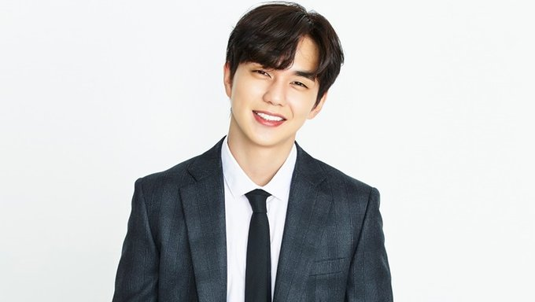

Yoo Seung-ho (Hangul: 유승호; born on August 17, 1993) is a South Korean actor who rose to fame as a child actor in the film The Way Home (2002). Since then, he has starred in many television series and movie films as a child and teenager.
After his two-year mandatory military service, he starred in the legal drama Remember (2015), historical films Joseon Magician (2015) and Seondal: The Man Who Sells The River (2016) as well as historical drama The Emperor: Owner of the Mask (2017), romance comedy series Im Not a Robot (2017), and SBS's high school drama My Strange Hero (2018).
Name: Yoo Seung-ho
Hangul: 유승호
Birthdate: August 17, 1993
Birthplace: South Korea
Height: 175 cm
Blood Type: A
Instagram: dandyoo93
Im Not a Robot | Roboti Aniya (MBC / 2017-2018) - Kim Min-Kyu
My Strange Hero | Boksooga Dolawadda (SBS / 2018-2019) - Kang Bok-Su
Memorist (tvN / 2020) - Dong Baek